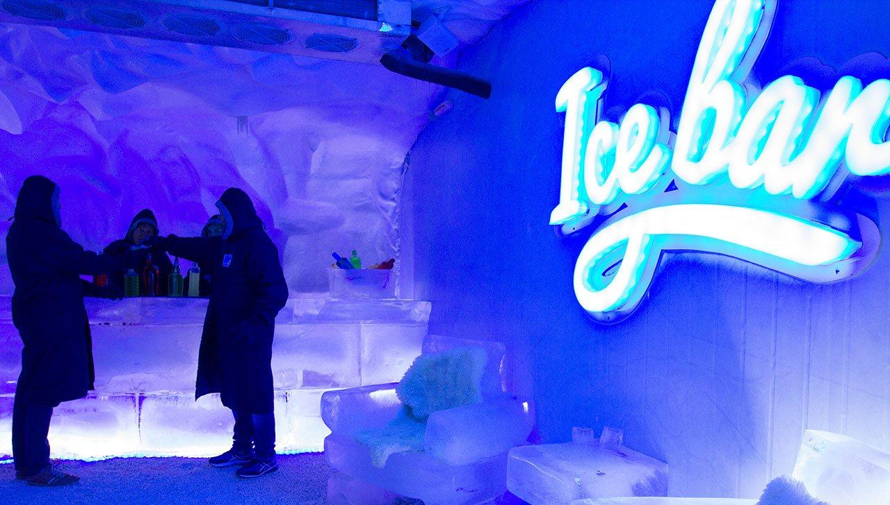
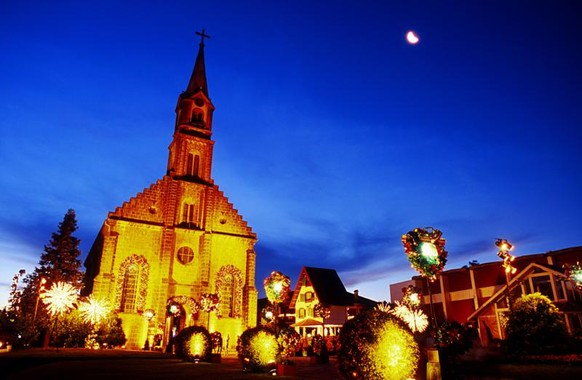

O Ice Bar de CANELA é o maior bar de gelo do Rio Grande do Sul e o único bar de gelo que oferece uma
temperatura que pode chegar até -25º, mas sempre girando em -20º e -22º. É um bar que tem música
eletrônica dos anos 80 e 90, onde o visitante pode tomar até dois drinks em copos degelo por pessoa entre
seis tipos que são oferecidos, alcoólicos ou não.

A unidade de Gramado foi inaugurada no fim de 2009, como o primeiro museu de cera da América Latina
voltado ao entretenimento. Começou com apenas 36 estátuas, que foram arrematadas em leilão e atualmente
possui um acervo formado por mais de cem peças.
Bem no coração da cidade de Gramado está a Igreja Matriz São Pedro. A construção inspirada no estilo
arquitetônico romano chama a atenção por sua beleza e hoje é um dos pontos turísticos mais fotografados.
A história mostra que a iniciativa de edificar esta obra – originalmente uma capela de madeira – foi do
Arcebispo D. João Becker, em 1917. Muitos anos depois, em 1943, começou a construção da igreja que vemos
hoje, formada por 78 mil pedras basálticas e imensos vitrais sacros que foram pintados pelo artista
alemão Pedro Dobmeier e que mostram as passagens da vida do apóstolo Pedro ao lado de Jesus Cristo. O
sino feito de bronze, aço e estanho pesa 1.000 quilos e em 2009 ele foi sistematizado eletronicamente. A
igreja tem uma altura de 860 metros, sendo que a torre tem 46 metros.
